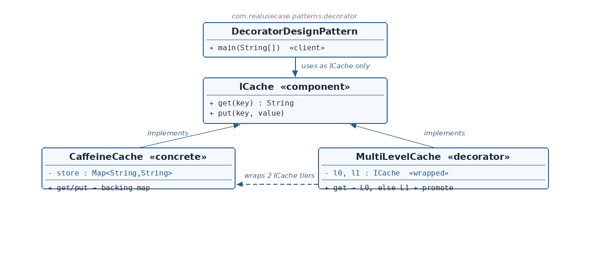

ICache.java — the Component
☕ 4 min read · 🎬 Video walkthrough · 📊 UML diagram · 💻 Runnable code
⚡ In a nutshell — Attach additional behavior to an object dynamically, by wrapping it in an object that implements the same interface and delegates — adding its own logic before or after.
Attach additional behavior to an object dynamically, by wrapping it in an object that implements the same interface and delegates — adding its own logic before or after. Decorators are stackable: because a decorator is a component, decorators can wrap decorators, composing behavior at runtime without subclassing.
Services that hammer a datastore put a cache in front of it — then discover one tier isn't enough: a small, hot in-process tier (L0) plus a larger, slower shared tier (L1). The classic production fix is tiered caching with promotion: read L0 first; on a miss, read L1 and promote the value into L0 so the next read is fast. This module models exactly that: MultiLevelCache is a decorator that implements the same ICache interface as the plain CaffeineCache it wraps — so callers can't tell the difference — while layering the tiering/promotion policy on top. (Wrapping two delegates is a real-world tiered-cache variant of the textbook single-delegate decorator; the structure and guarantees are the same.)
ICache is the Component interface: get(key) / put(key, value) — what every cache, plain or decorated, must speak.CaffeineCache is the Concrete Component: a straightforward map-backed cache, standing in for a real Caffeine instance.MultiLevelCache is the Decorator: it implements ICache and holds wrapped ICache delegates (l0, l1). Its get adds the tiering policy — L0 first, then L1 with promotion — and its put writes through to both tiers.l0/l1 are typed as ICache, a MultiLevelCache can itself wrap another MultiLevelCache — three-tier caching with zero new code. That is decorator stackability.
Reading the diagram: both the plain cache and the decorator implement ICache. The decorator additionally holds ICache references (dashed arrow) — it is simultaneously an implementation of the interface and a wrapper around it. The client's variable is just ICache; it cannot tell whether tiering is present.
ICache — Component — the get/put contract everything speaks.CaffeineCache — Concrete component — plain map-backed cache.MultiLevelCache — Decorator — same interface, wraps two tiers, adds hit/promotion policy.DecoratorDesignPattern — Client — uses the decorated cache purely as ICache.public interface ICache {
String get(String key);
void put(String key, String value);
}
CaffeineCache.java — the Concrete Componentpublic class CaffeineCache implements ICache {
private final Map<String, String> store = new HashMap<>();
@Override public String get(String key) { return store.get(key); }
@Override public void put(String key, String value) { store.put(key, value); }
}
MultiLevelCache.java — the Decoratorpublic class MultiLevelCache implements ICache {
private final ICache l0;
private final ICache l1;
public MultiLevelCache(ICache l0, ICache l1) {
this.l0 = l0;
this.l1 = l1;
}
ICache and holds ICache fields — the decorator's defining double role. l0 is the fast tier, l1 the slower tier; both typed to the interface, so each may be a plain cache or another decorator. @Override
public String get(String key) {
String value = l0.get(key);
if (value != null) {
System.out.println("L0 hit: " + key);
return value;
}
value = l1.get(key);
if (value != null) {
System.out.println("L1 hit, promoting to L0: " + key);
l0.put(key, value);
}
return value;
}
get/put calls; the decorator only adds policy around them. @Override
public void put(String key, String value) {
l0.put(key, value);
l1.put(key, value);
}
DecoratorDesignPattern.java — the clientICache cache = new MultiLevelCache(new CaffeineCache(), new CaffeineCache());
cache.put("k1", "v1");
System.out.println(cache.get("k1"));
System.out.println(cache.get("k1"));
ICache — after the composition line, the client can't tell it holds a tiered cache. Both get calls hit L0 (the put wrote through to both tiers), printing the L0 hit trace before each value.ICache, not CaffeineCache? Stackability. new MultiLevelCache(hotTier, new MultiLevelCache(warmTier, coldTier)) gives three tiers with zero new classes.CaffeineCache? The tiering policy composes with any ICache — Redis-backed, disk-backed, another decorator — not just one concrete class, and it's chosen at runtime, not compile time.$ java -cp target/classes com.realusecase.patterns.DecoratorDesignPattern
L0 hit: k1
v1
L0 hit: k1
v1
java.io: new BufferedInputStream(new FileInputStream(...)) — the classic stacked decorators.Collections.unmodifiableList, synchronizedList; Spring's BufferedReaderHttpServletRequest wrappers; metrics/retry/logging wrappers around clients.Same interface outside, extra behavior inside — and decorators stack as deep as you need.
👏 Found this useful? Give it a few claps so more developers discover it, and follow for the whole series — every article ships with a UML diagram, runnable code, a narrated video, and a companion PDF. Happy building! 🚀